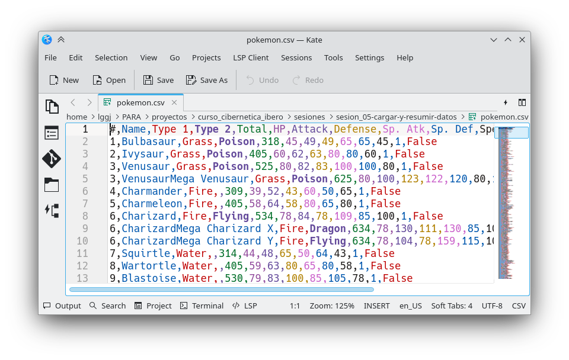
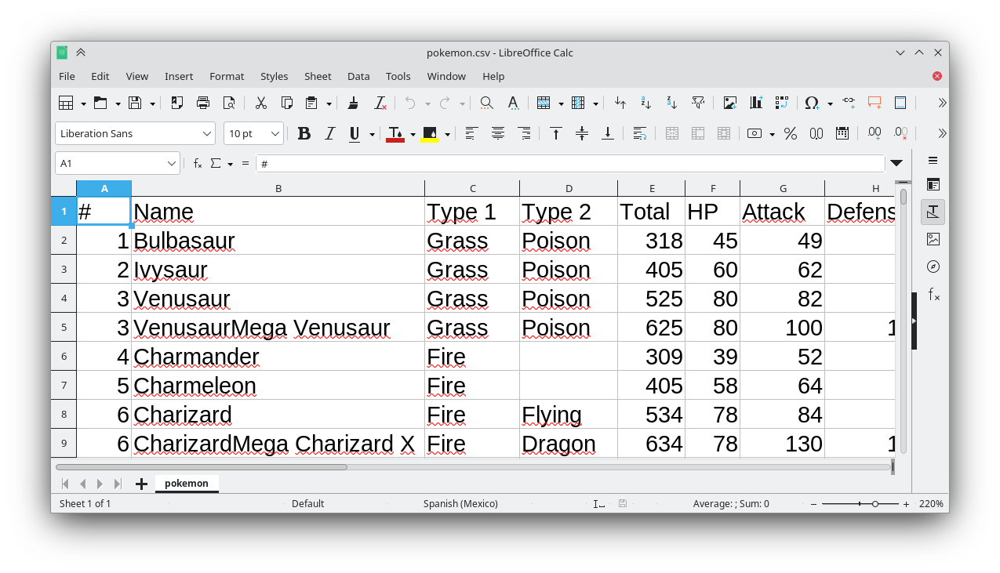
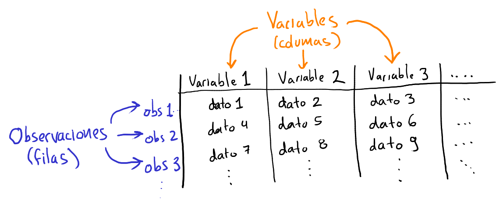
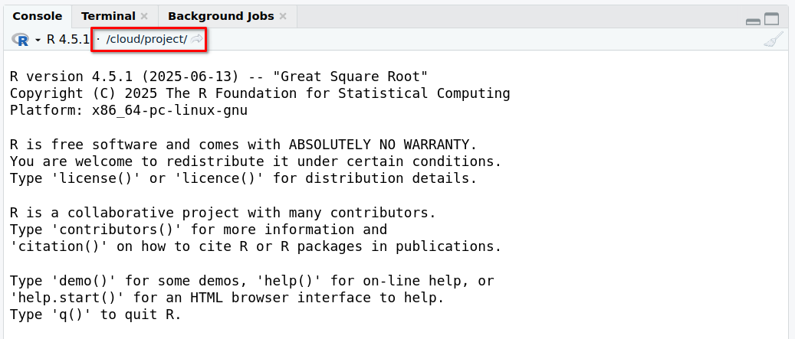
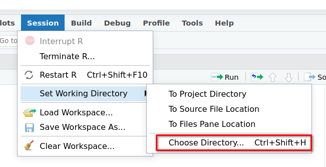
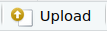
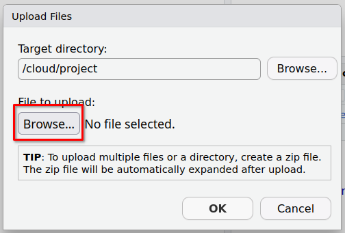

getwd()[1] "/home/lggj/PARA/proyectos/curso_cibernetica_ibero/cibernetica_para_la_sustentabilidad/procesamiento_de_datos/sesion_04"Hasta ahora hemos visto:
¡Ya tenemos las herramientas necesarias para empezar a trabajar con datos reales!
En este notebook vemos cómo podemos cargar datos en R.
Objetivos
En este notebook vamos a explorar datos de pokemon.
Instrucciones
CTRL + S) y guarda los datos en tu computadora. Asegúrate de dejarle la extensión de archivo .csvEl archivo que se te debió descargar es uno con extensión .csv. Estos son archivos muy comunes cuando trabajamos con datos. csv significa «Comma Separated Values», es decir, valores separados por comas. Este archivo lo puedes abrir con varios programas, por ejemplo, con un editor de texto cualquiera como Block de notas en Windows o TextEdit de Mac. Si lo abres verás algo así:

La primera fila nos da el nombre de las variables que tenemos separados por comas. Los nombres son bastante descriptivos y podemos facilmente deducir qué datos tenemos:
#: un identificadorName: el nombre del pokemónType 1, Type 2: el tipo de pokemónHP: el poder total del pokemónAttack, Defense, Sp. Atk, Sp. Def, Speed: el puntaje de ataque, defensa, ataque y defensa especial y la velocidadGeneration: la generación a la que perteneceLegendary: si es un pokemón legendario o noLas siguientes filas nos dan los valores de las variables para distintos pokemón.
Por ejemplo, en la segunda fila tenemos los datos:
BulbasaurGrassPoison318Esto nos dice que en Bulbasaur es un pokemón de tipo pasto y veneno y que su HP es 318.
Como podrás notar este archivo es similar a una tabla y si lo abres en una aplicación de hojas de cáclulo como Excel, Google Sheets o LibreOffice Calc, verás algo así:

Como podrás notar esto es como una tabla donde cada columna corresponde a una variable y cada fila a una observación:

Los archivos .csv son muy comunes para almacenar datos ya que son muy ligeros, se pueden abrir con cualquier programa y se pueden manipular fácilmente.
Algo fundamental cuando trabajamos con R es establecer nuestro Directorio de trabajo o Working directory. Este es una cartpeta que RStudio utiliza para encontrar los archivos que uno quiera cargar.
Puedes ver cual es tu directorio de trabajo en la parte superior de tu consola:

También puedes preguntarle a R cuál es el directorio de trabajo con el siguiene comando:
getwd()[1] "/home/lggj/PARA/proyectos/curso_cibernetica_ibero/cibernetica_para_la_sustentabilidad/procesamiento_de_datos/sesion_04"Cuando trabajamos en RStudio usando Posit Cloud generalmente el directorio de trabajo ya está bien determinado y no hay que hacer nada. Sin embargo, cuando trabajamos en RStudio en nuestras computadoras personales debemos especificar nuestro directorio de trabajo. Para eso debemos dar click en «Session > Set Working Directory > Choose Directory» y elegir la carpeta donde queremos trabajar.

Otra forma de establecer el directorio de trabajo es usando la función setwd() a la cual le debemos dar la ruta completa a la carpeta donde queremos trabajar:
# setwd("/cloud/project/")Si trabajas en tu computadora personal solo debes colocar los datos el directorio de trabajo, pero al trabajar en Posit Cloud debemos subir los datos para poder usarlos.
Para subir los datos:
En el panel inferior derecho de RStudio selecciona la pestaña Files
Da click en Upload: 
Da click en Browse en la sección de File to upload:

Busca y selecciona tu archivo csv
Listo. Tu archivo debe aparecer en la lista de archivos.
Para leer los datos vamos a usar un paquete que se llama tidyverse. Este generalmente hay que instalarlo primero, pero para este proyecto de Posit Cloud yo ya lo instalé previamente por lo que solo hay que pedirle a R que cargue el paquete con la función library:
## Instalar tidyverse
# install.packages("tidyverse")
## Cargar tidyverse
library(tidyverse)── Attaching core tidyverse packages ──────────────────────── tidyverse 2.0.0 ──
✔ dplyr 1.1.4 ✔ readr 2.1.5
✔ forcats 1.0.0 ✔ stringr 1.5.1
✔ ggplot2 3.5.2 ✔ tibble 3.3.0
✔ lubridate 1.9.4 ✔ tidyr 1.3.1
✔ purrr 1.1.0
── Conflicts ────────────────────────────────────────── tidyverse_conflicts() ──
✖ dplyr::filter() masks stats::filter()
✖ dplyr::lag() masks stats::lag()
ℹ Use the conflicted package (<http://conflicted.r-lib.org/>) to force all conflicts to become errorsPara leer el archivo usamos una función que se llama read_csv a la cual como argumento debemos pasarle la el nombre del archivo que queremos leer (en forma de cadena):
read_csv("./pokemon.csv")Rows: 800 Columns: 13
── Column specification ────────────────────────────────────────────────────────
Delimiter: ","
chr (3): Name, Type 1, Type 2
dbl (9): #, Total, HP, Attack, Defense, Sp. Atk, Sp. Def, Speed, Generation
lgl (1): Legendary
ℹ Use `spec()` to retrieve the full column specification for this data.
ℹ Specify the column types or set `show_col_types = FALSE` to quiet this message.# A tibble: 800 × 13
`#` Name `Type 1` `Type 2` Total HP Attack Defense `Sp. Atk` `Sp. Def`
<dbl> <chr> <chr> <chr> <dbl> <dbl> <dbl> <dbl> <dbl> <dbl>
1 1 Bulba… Grass Poison 318 45 49 49 65 65
2 2 Ivysa… Grass Poison 405 60 62 63 80 80
3 3 Venus… Grass Poison 525 80 82 83 100 100
4 3 Venus… Grass Poison 625 80 100 123 122 120
5 4 Charm… Fire <NA> 309 39 52 43 60 50
6 5 Charm… Fire <NA> 405 58 64 58 80 65
7 6 Chari… Fire Flying 534 78 84 78 109 85
8 6 Chari… Fire Dragon 634 78 130 111 130 85
9 6 Chari… Fire Flying 634 78 104 78 159 115
10 7 Squir… Water <NA> 314 44 48 65 50 64
# ℹ 790 more rows
# ℹ 3 more variables: Speed <dbl>, Generation <dbl>, Legendary <lgl>Como podrás ver los datos R los reconoce como una tabla y el comando solo nos imprime una parte de los datos.
Nota como la consola se te da información sobre los datos que acabas de importar. En particular podemos ver que los datos tienen 800 filas y 13 columnas. Además abajo nos dice el tipo de dato con el que se importó cada columna. Podemos ver que las columnas Name, Type 1 y Type 2 las importó como cadenas de caracteres (chr). Las columnas #, Total, HP, Attack, Defense, Sp. Atk, Sp. Def, Speed, Generation las importó como números (dbl). Y la columna Legendary como un valor booleano (lgl) que solo puede tomar los valores TRUE o FALSE.
Para poder trabajar con los datos en R hay que guardarlos en una variable:
pokemon <- read_csv("./pokemon.csv")Rows: 800 Columns: 13
── Column specification ────────────────────────────────────────────────────────
Delimiter: ","
chr (3): Name, Type 1, Type 2
dbl (9): #, Total, HP, Attack, Defense, Sp. Atk, Sp. Def, Speed, Generation
lgl (1): Legendary
ℹ Use `spec()` to retrieve the full column specification for this data.
ℹ Specify the column types or set `show_col_types = FALSE` to quiet this message.Para visualizar tus datos a manera de una hoja de calculo puedes usar el comando View el cual abre una nueva pestaña mostrando los datos:
View(pokemon)Advertencia: No es recomendable abrir de esta manera archivos muy grandes ya que puedes hacer que R se trabe.
Otra función útil para darnos una idea de cómo se ve un conjunto es la función head que nos muestra solo el inicio de nuestra tabla:
head(pokemon)# A tibble: 6 × 13
`#` Name `Type 1` `Type 2` Total HP Attack Defense `Sp. Atk` `Sp. Def`
<dbl> <chr> <chr> <chr> <dbl> <dbl> <dbl> <dbl> <dbl> <dbl>
1 1 Bulbas… Grass Poison 318 45 49 49 65 65
2 2 Ivysaur Grass Poison 405 60 62 63 80 80
3 3 Venusa… Grass Poison 525 80 82 83 100 100
4 3 Venusa… Grass Poison 625 80 100 123 122 120
5 4 Charma… Fire <NA> 309 39 52 43 60 50
6 5 Charme… Fire <NA> 405 58 64 58 80 65
# ℹ 3 more variables: Speed <dbl>, Generation <dbl>, Legendary <lgl>Podemos controlar el número de filas que queremos ver con el argumento n:
head(pokemon, n = 10)# A tibble: 10 × 13
`#` Name `Type 1` `Type 2` Total HP Attack Defense `Sp. Atk` `Sp. Def`
<dbl> <chr> <chr> <chr> <dbl> <dbl> <dbl> <dbl> <dbl> <dbl>
1 1 Bulba… Grass Poison 318 45 49 49 65 65
2 2 Ivysa… Grass Poison 405 60 62 63 80 80
3 3 Venus… Grass Poison 525 80 82 83 100 100
4 3 Venus… Grass Poison 625 80 100 123 122 120
5 4 Charm… Fire <NA> 309 39 52 43 60 50
6 5 Charm… Fire <NA> 405 58 64 58 80 65
7 6 Chari… Fire Flying 534 78 84 78 109 85
8 6 Chari… Fire Dragon 634 78 130 111 130 85
9 6 Chari… Fire Flying 634 78 104 78 159 115
10 7 Squir… Water <NA> 314 44 48 65 50 64
# ℹ 3 more variables: Speed <dbl>, Generation <dbl>, Legendary <lgl>Una función complementaria a head es la función tail, la cual nos muestra solo una parte del final de los datos:
tail(pokemon, n = 3)# A tibble: 3 × 13
`#` Name `Type 1` `Type 2` Total HP Attack Defense `Sp. Atk` `Sp. Def`
<dbl> <chr> <chr> <chr> <dbl> <dbl> <dbl> <dbl> <dbl> <dbl>
1 720 HoopaH… Psychic Ghost 600 80 110 60 150 130
2 720 HoopaH… Psychic Dark 680 80 160 60 170 130
3 721 Volcan… Fire Water 600 80 110 120 130 90
# ℹ 3 more variables: Speed <dbl>, Generation <dbl>, Legendary <lgl>Otra función para echar un vistazo a los datos es la función glimpse, la cual nos muestra todas las columnas de manera horizontal:
glimpse(pokemon)Rows: 800
Columns: 13
$ `#` <dbl> 1, 2, 3, 3, 4, 5, 6, 6, 6, 7, 8, 9, 9, 10, 11, 12, 13, 14, …
$ Name <chr> "Bulbasaur", "Ivysaur", "Venusaur", "VenusaurMega Venusaur"…
$ `Type 1` <chr> "Grass", "Grass", "Grass", "Grass", "Fire", "Fire", "Fire",…
$ `Type 2` <chr> "Poison", "Poison", "Poison", "Poison", NA, NA, "Flying", "…
$ Total <dbl> 318, 405, 525, 625, 309, 405, 534, 634, 634, 314, 405, 530,…
$ HP <dbl> 45, 60, 80, 80, 39, 58, 78, 78, 78, 44, 59, 79, 79, 45, 50,…
$ Attack <dbl> 49, 62, 82, 100, 52, 64, 84, 130, 104, 48, 63, 83, 103, 30,…
$ Defense <dbl> 49, 63, 83, 123, 43, 58, 78, 111, 78, 65, 80, 100, 120, 35,…
$ `Sp. Atk` <dbl> 65, 80, 100, 122, 60, 80, 109, 130, 159, 50, 65, 85, 135, 2…
$ `Sp. Def` <dbl> 65, 80, 100, 120, 50, 65, 85, 85, 115, 64, 80, 105, 115, 20…
$ Speed <dbl> 45, 60, 80, 80, 65, 80, 100, 100, 100, 43, 58, 78, 78, 45, …
$ Generation <dbl> 1, 1, 1, 1, 1, 1, 1, 1, 1, 1, 1, 1, 1, 1, 1, 1, 1, 1, 1, 1,…
$ Legendary <lgl> FALSE, FALSE, FALSE, FALSE, FALSE, FALSE, FALSE, FALSE, FAL…Si solo queremos ver los nombres de las columnas de nuestros datos podemos usar la función names:
names(pokemon) [1] "#" "Name" "Type 1" "Type 2" "Total"
[6] "HP" "Attack" "Defense" "Sp. Atk" "Sp. Def"
[11] "Speed" "Generation" "Legendary" En este ejercicio vas a descargar y cargar un conjunto de datos de películas de Pixar
read_csv y guárdalos en una variable que se llame pixarView.¿Cuántas filas y cuantas columnas tienes?
¿Qué variables incluye tu conjunto de datos? ¿Qué crees que signifique cada variable?
# Escribe aquí tu código